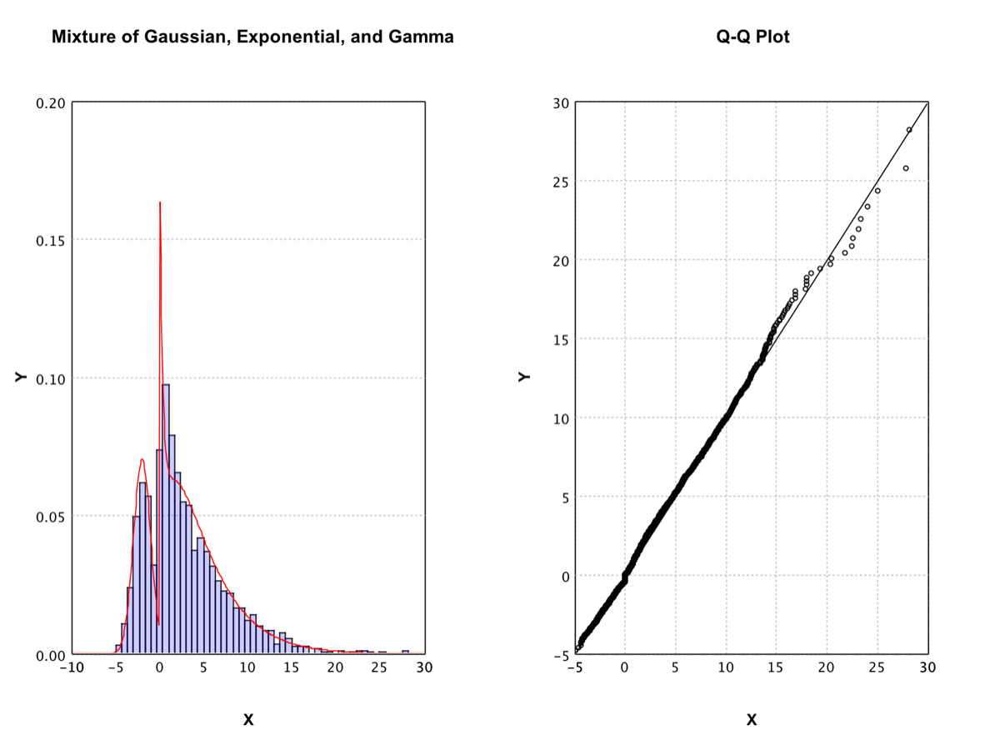

Statistics
SMILE covers everyday descriptive statistics in
MathEx,
parametric and nonparametric distributions in
smile.stat.distribution,
and classical hypothesis tests in
smile.stat.hypothesis.
This page goes from summaries → distributions → tests.
Descriptive Statistics
MathEx provides
sum, mean, median,
q1, q3,
variance, stdev,
mad (median absolute deviation),
min, max,
whichMin, whichMax, and related helpers.
import static smile.math.MathEx.*
double[] x = {1.0, 2.0, 3.0, 4.0}
mean(x)
stdev(x)
median(x)
mad(x)
2.5
1.2909944487358054
2.5
1.0
import smile.math.MathEx.*
val x = Array(1.0, 2.0, 3.0, 4.0)
mean(x)
stdev(x)
median(x)
mad(x)
2.5
1.2909944487358054
2.5
1.0
Distributions
Univariate distributions implement
Distribution:
Bernoulli, beta, binomial, χ2, exponential, F, gamma,
Gaussian, geometric, hypergeometric, logistic, log-normal,
negative binomial, Poisson, shifted geometric, t, and Weibull.
Multivariate Gaussian and finite mixture models (including exponential-family
EM) are also available.
Construct a distribution from parameters or estimate it from data
(fit). Then query mean / variance / entropy,
draw samples with rand, evaluate the density
(p or CDF (cdf), invert with
quantile, and score samples with
likelihood / logLikelihood.
import smile.math.MathEx
import smile.stat.distribution.*
MathEx.setSeed(19650218)
var e = new ExponentialDistribution(1.0)
e.mean()
e.variance()
e.sd()
e.entropy()
e.p(2)
e.cdf(2)
e.quantile(0.1)
e.logLikelihood(new double[]{1.0, 1.1, 0.9, 1.5})
ExponentialDistribution.fit(new double[]{1.0, 1.1, 0.9, 1.5, 1.8, 1.9, 2.0, 0.5})
1.0
1.0
1.0
1.0
0.1353352832366127
0.8646647167633873
0.10536051565782628
-4.5
Exponential Distribution(0.7477)
import smile.math.MathEx
import smile.stat.distribution.*
MathEx.setSeed(19650218)
val e = new ExponentialDistribution(1.0)
e.mean
e.variance
e.sd
e.entropy
e.p(2.0)
e.cdf(2.0)
e.quantile(0.1)
e.logLikelihood(Array(1.0, 1.1, 0.9, 1.5))
ExponentialDistribution.fit(Array(1.0, 1.1, 0.9, 1.5, 1.8, 1.9, 2.0, 0.5))
1.0
1.0
1.0
1.0
0.1353352832366127
0.8646647167633873
0.10536051565782628
-4.5
Exponential Distribution(0.7477)
Mixture Models
When data come from several exponential-family components,
ExponentialFamilyMixture.fit estimates weights and
parameters by EM. Seed the RNG for reproducible demos.
import java.util.stream.DoubleStream
import smile.math.MathEx
import smile.stat.distribution.*
MathEx.setSeed(19650218)
var gaussian = new GaussianDistribution(-2.0, 1.0)
var exp = new ExponentialDistribution(0.8)
var gamma = new GammaDistribution(2.0, 3.0) // shape, scale
var data = DoubleStream.concat(
DoubleStream.concat(
DoubleStream.generate(gaussian::rand).limit(500),
DoubleStream.generate(exp::rand).limit(500)),
DoubleStream.generate(gamma::rand).limit(1000)).toArray()
var mixture = ExponentialFamilyMixture.fit(data,
new Mixture.Component(0.25, new GaussianDistribution(0.0, 1.0)),
new Mixture.Component(0.25, new ExponentialDistribution(1.0)),
new Mixture.Component(0.5, new GammaDistribution(1.0, 2.0)))
mixture
// Nonparametric alternative when the family is unknown
var kde = new KernelDensity(data)
kde.p(1.0)
mixture.p(1.0)
Mixture(3)[≈0.30 x Gaussian(…) + ≈0.13 x Exponential(…) + ≈0.57 x Gamma(…)]
kde.p(1) ≈ 0.11–0.12
mixture.p(1) ≈ 0.12–0.14
import smile.math.MathEx
import smile.stat.distribution.*
MathEx.setSeed(19650218)
val gaussian = new GaussianDistribution(-2.0, 1.0)
val exp = new ExponentialDistribution(0.8)
val gamma = new GammaDistribution(2.0, 3.0)
val data =
Array.fill(500)(gaussian.rand()) ++
Array.fill(500)(exp.rand()) ++
Array.fill(1000)(gamma.rand())
val mixture = ExponentialFamilyMixture.fit(data,
new Mixture.Component(0.25, new GaussianDistribution(0.0, 1.0)),
new Mixture.Component(0.25, new ExponentialDistribution(1.0)),
new Mixture.Component(0.5, new GammaDistribution(1.0, 2.0)))
mixture
val kde = new KernelDensity(data)
kde.p(1.0)
mixture.p(1.0)
Mixture(3)[≈0.30 x Gaussian(…) + ≈0.13 x Exponential(…) + ≈0.57 x Gamma(…)]
kde.p(1) ≈ 0.11–0.12
mixture.p(1) ≈ 0.12–0.14
If the parametric family is unknown,
KernelDensity
(Parzen window) estimates the density nonparametrically from the sample.
Plot the fitted mixture against the sample: a probability histogram with the density curve overlaid (scaled by bin width), and a one-sample Q-Q plot.
import java.awt.Color
import java.util.Arrays
import smile.math.MathEx
import smile.plot.swing.*
import smile.stat.distribution.*
// assumes `data` and `mixture` from the fit above
int nbins = 50
double lo = MathEx.min(data), hi = MathEx.max(data)
double binWidth = (hi - lo) / nbins
// Histogram (probability scale) + mixture density × bin width
var hist = Histogram.of(data, nbins, true).figure()
hist.setTitle("Mixture of Gaussian, Exponential, and Gamma")
double[][] curve = new double[201][2]
for (int i = 0; i <= 200; i++) {
double x = lo + i * (hi - lo) / 200.0
curve[i][0] = x
curve[i][1] = mixture.p(x) * binWidth
}
hist.add(LinePlot.of(curve, Color.RED))
// Q-Q plot vs the fitted mixture (copy — QQPlot sorts in place)
var qq = QQPlot.of(Arrays.copyOf(data, data.length), mixture).figure()
qq.setTitle("Q-Q Plot")
var pane = new MultiFigurePane(1, 2)
pane.content().add(new Canvas(hist))
pane.content().add(new Canvas(qq))
pane.window()
(opens plot: histogram + density | Q-Q)
import java.awt.Color
import smile.math.MathEx
import smile.plot.swing._
import smile.stat.distribution._
// assumes `data` and `mixture` from the fit above
val nbins = 50
val lo = MathEx.min(data)
val hi = MathEx.max(data)
val binWidth = (hi - lo) / nbins
val histCanvas = hist(data, nbins, prob = true)
histCanvas.figure.setTitle("Mixture of Gaussian, Exponential, and Gamma")
val curve = Array.tabulate(201) { i =>
val x = lo + i * (hi - lo) / 200.0
Array(x, mixture.p(x) * binWidth)
}
histCanvas.figure.add(LinePlot.of(curve, Color.RED))
val qqCanvas = qqplot(data.clone(), mixture)
qqCanvas.figure.setTitle("Q-Q Plot")
val pane = new MultiFigurePane(1, 2)
pane.content.add(histCanvas)
pane.content.add(qqCanvas)
show(pane)
(opens plot: histogram + density | Q-Q)

Hypothesis Tests
A test asks whether an observed effect is plausibly due to chance under a null hypothesis, given a significance level. SMILE implements the common χ2, F, t, Kolmogorov–Smirnov, and correlation tests.
χ2 Test
One-sample: observed bin counts vs expected probabilities. A small p-value indicates the sample disagrees with the hypothesized distribution.
import smile.stat.hypothesis.ChiSqTest
int[] bins = {20, 22, 13, 22, 10, 13}
double[] prob = {1.0/6, 1.0/6, 1.0/6, 1.0/6, 1.0/6, 1.0/6}
ChiSqTest.test(bins, prob)
One Sample Chi-squared Test(t = 8.3600, df = 5.000, p-value = 0.137480)
import smile.math.*
val bins = Array(20, 22, 13, 22, 10, 13)
val prob = Array.fill(6)(1.0/6)
chisqtest(bins, prob)
One Sample Chi-squared Test(t = 8.3600, df = 5.000, p-value = 0.137480)
Two-sample: compare two sets of binned counts.
import smile.stat.hypothesis.ChiSqTest
int[] bins1 = {8, 13, 16, 10, 3}
int[] bins2 = {4, 9, 14, 16, 7}
ChiSqTest.test(bins1, bins2)
Two Sample Chi-squared Test(t = 5.1786, df = 4.000, p-value = 0.269462)
import smile.math.*
val bins1 = Array(8, 13, 16, 10, 3)
val bins2 = Array(4, 9, 14, 16, 7)
chisqtest2(bins1, bins2)
Two Sample Chi-squared Test(t = 5.1786, df = 4.000, p-value = 0.269462)
Independence: contingency table of two nominal variables. 2×2 tables use continuity correction; association strength is reported as Cramér’s V.
import smile.stat.hypothesis.ChiSqTest
int[][] count = { {12, 7}, {5, 7} }
ChiSqTest.test(count)
Pearson's Chi-squared Test(t = 0.6411, df = 1.000, p-value = 0.423305)
import smile.math.*
val count = Array(Array(12, 7), Array(5, 7))
chisqtest(count)
Pearson's Chi-squared Test(t = 0.6411, df = 1.000, p-value = 0.423305)
F Test and t Test
The F-test compares sample variances (small p-value → unequal variances);
FTest.test(groupLabels, values) also covers one-way ANOVA.
The t-test covers one-sample means, paired differences, and
unpaired two-sample means (Welch or equal-variance).
import smile.stat.hypothesis.*
double[] x = {
0.48074284, -0.52975023, 1.28590721, 0.63456079, -0.41761197, 2.76072411,
1.30321095, -1.16454533, 2.27210509, 1.46394553, -0.31713164, 1.26247543,
2.65886430, 0.40773450, 1.18055440, -0.39611251, 2.13557687, 0.40878860,
1.28461394, -0.02906355}
double[] y = {
1.7495879, 1.9359727, 3.1294928, 0.0861894, 2.1643415, 0.1913219,
-0.3947444, 1.6910837, 1.1548294, 0.2763955, 0.4794719, 3.1805501,
1.5700497, 2.6860190, -0.4410879, 1.8900183, 1.3422381, -0.1701592}
double[] z = {
0.6621329, 0.4688975, -0.1553013, 0.4564548, 2.2776146, 2.1543678,
2.8555142, 1.5852899, 0.9091290, 1.6060025, 1.0111968, 1.2479493,
0.9407034, 1.7167572, 0.5380608, 2.1290007, 1.8695506, 1.2139096}
FTest.test(x, y)
FTest.test(x, z)
TTest.test(x, 1.0) // one-sample: H0 mean = μ
TTest.test(x, 1.1)
TTest.testPaired(y, z) // paired
TTest.test(x, y, false) // Welch
TTest.test(x, y, true) // equal variance
TTest.test(x, z, false)
TTest.test(x, z, true)
F-test(f = 1.0958, df1 = 17, df2 = 19, p-value = 0.841464)
F-test(f = 2.0460, df1 = 19, df2 = 17, p-value = 0.143778)
One Sample t-test(t = -0.6641, df = 19.000, p-value = 0.514609)
One Sample t-test(t = -1.0648, df = 19.000, p-value = 0.300300)
Paired t-test(t = -0.1502, df = 17.000, p-value = 0.882382)
Unequal Variance Two Sample t-test(t = -1.1219, df = 35.167, p-value = 0.269491)
Equal Variance Two Sample t-test(t = -1.1247, df = 36.000, p-value = 0.268153)
Unequal Variance Two Sample t-test(t = -1.5180, df = 34.025, p-value = 0.138243)
Equal Variance Two Sample t-test(t = -1.4901, df = 36.000, p-value = 0.144906)
import smile.math.*
val x = Array(
0.48074284, -0.52975023, 1.28590721, 0.63456079, -0.41761197, 2.76072411,
1.30321095, -1.16454533, 2.27210509, 1.46394553, -0.31713164, 1.26247543,
2.65886430, 0.40773450, 1.18055440, -0.39611251, 2.13557687, 0.40878860,
1.28461394, -0.02906355)
val y = Array(
1.7495879, 1.9359727, 3.1294928, 0.0861894, 2.1643415, 0.1913219,
-0.3947444, 1.6910837, 1.1548294, 0.2763955, 0.4794719, 3.1805501,
1.5700497, 2.6860190, -0.4410879, 1.8900183, 1.3422381, -0.1701592)
val z = Array(
0.6621329, 0.4688975, -0.1553013, 0.4564548, 2.2776146, 2.1543678,
2.8555142, 1.5852899, 0.9091290, 1.6060025, 1.0111968, 1.2479493,
0.9407034, 1.7167572, 0.5380608, 2.1290007, 1.8695506, 1.2139096)
ftest(x, y)
ftest(x, z)
ttest(x, 1.0)
ttest(x, 1.1)
ttest(y, z) // paired
ttest2(x, y) // Welch
ttest2(x, y, true) // equal variance
ttest2(x, z)
ttest2(x, z, true)
F-test(f = 1.0958, df1 = 17, df2 = 19, p-value = 0.841464)
F-test(f = 2.0460, df1 = 19, df2 = 17, p-value = 0.143778)
One Sample t-test(t = -0.6641, df = 19.000, p-value = 0.514609)
One Sample t-test(t = -1.0648, df = 19.000, p-value = 0.300300)
Paired t-test(t = -0.1502, df = 17.000, p-value = 0.882382)
Unequal Variance Two Sample t-test(t = -1.1219, df = 35.167, p-value = 0.269491)
Equal Variance Two Sample t-test(t = -1.1247, df = 36.000, p-value = 0.268153)
Unequal Variance Two Sample t-test(t = -1.5180, df = 34.025, p-value = 0.138243)
Equal Variance Two Sample t-test(t = -1.4901, df = 36.000, p-value = 0.144906)
Kolmogorov–Smirnov Test
Compare an empirical CDF to a theoretical distribution (one-sample) or to another sample (two-sample). Both variants sort the input arrays in place.
import smile.stat.distribution.GaussianDistribution
import smile.stat.hypothesis.KSTest
double[] x = {
0.53236606, -1.36750258, -1.47239199, -0.12517888, -1.24040594, 1.90357309,
-0.54429527, 2.22084140, -1.17209146, -0.68824211, -1.75068914, 0.48505896,
2.75342248, -0.90675303, -1.05971929, 0.49922388, -1.23214498, 0.79284888,
0.85309580, 0.17903487, 0.39894754, -0.52744720, 0.08516943, -1.93817962,
0.25042913, -0.56311389, -1.08608388, 0.11912253, 2.87961007, -0.72674865,
1.11510699, 0.39970074, 0.50060532, -0.82531807, 0.14715616, -0.96133601,
-0.95699473, -0.71471097, -0.50443258, 0.31690224, 0.04325009, 0.85316056,
0.83602606, 1.46678847, 0.46891827, 0.69968175, 0.97864326, 0.66985742,
-0.20922486, -0.15265994}
double[] y = {
0.95791391, 0.16203847, 0.56622013, 0.39252941, 0.99126354, 0.65639108,
0.07903248, 0.84124582, 0.76718719, 0.80756577, 0.12263981, 0.84733360,
0.85190907, 0.77896244, 0.84915723, 0.78225903, 0.95788055, 0.01849366,
0.21000365, 0.97951772, 0.60078520, 0.80534223, 0.77144013, 0.28495121,
0.41300867, 0.51547517, 0.78775718, 0.07564151, 0.82871088, 0.83988694}
KSTest.test(x.clone(), new GaussianDistribution(0, 1))
KSTest.test(x.clone(), y.clone())
Gaussian Distribution(0.0000, 1.0000) Kolmogorov-Smirnov Test(d = 0.0930, p-value = 0.759824)
Two Sample Kolmogorov-Smirnov Test(d = 0.4600, p-value = 0.000416466)
import smile.math.*
import smile.stat.distribution.GaussianDistribution
val x = Array(
0.53236606, -1.36750258, -1.47239199, -0.12517888, -1.24040594, 1.90357309,
-0.54429527, 2.22084140, -1.17209146, -0.68824211, -1.75068914, 0.48505896,
2.75342248, -0.90675303, -1.05971929, 0.49922388, -1.23214498, 0.79284888,
0.85309580, 0.17903487, 0.39894754, -0.52744720, 0.08516943, -1.93817962,
0.25042913, -0.56311389, -1.08608388, 0.11912253, 2.87961007, -0.72674865,
1.11510699, 0.39970074, 0.50060532, -0.82531807, 0.14715616, -0.96133601,
-0.95699473, -0.71471097, -0.50443258, 0.31690224, 0.04325009, 0.85316056,
0.83602606, 1.46678847, 0.46891827, 0.69968175, 0.97864326, 0.66985742,
-0.20922486, -0.15265994)
val y = Array(
0.95791391, 0.16203847, 0.56622013, 0.39252941, 0.99126354, 0.65639108,
0.07903248, 0.84124582, 0.76718719, 0.80756577, 0.12263981, 0.84733360,
0.85190907, 0.77896244, 0.84915723, 0.78225903, 0.95788055, 0.01849366,
0.21000365, 0.97951772, 0.60078520, 0.80534223, 0.77144013, 0.28495121,
0.41300867, 0.51547517, 0.78775718, 0.07564151, 0.82871088, 0.83988694)
kstest(x.clone(), new GaussianDistribution(0, 1))
kstest(x.clone(), y.clone())
Gaussian Distribution(0.0000, 1.0000) Kolmogorov-Smirnov Test(d = 0.0930, p-value = 0.759824)
Two Sample Kolmogorov-Smirnov Test(d = 0.4600, p-value = 0.000416466)
Correlation Tests
Pearson assumes roughly normal continuous variables. For ordinal / non-parametric association use Spearman (rank Pearson) or Kendall τ. p-values for rank correlations are approximate and work best for n > 10.
import smile.stat.hypothesis.CorTest
double[] x = {44.4, 45.9, 41.9, 53.3, 44.7, 44.1, 50.7, 45.2, 60.1}
double[] y = {2.6, 3.1, 2.5, 5.0, 3.6, 4.0, 5.2, 2.8, 3.8}
CorTest.pearson(x, y)
CorTest.spearman(x, y)
CorTest.kendall(x, y)
Pearson Correlation Test(cor = 0.57, t = 1.8411, df = 7.000, p-value = 0.108173)
Spearman Correlation Test(cor = 0.60, t = 1.9843, df = 7.000, p-value = 0.0876228)
Kendall Correlation Test(cor = 0.44, t = 1.6681, df = 0.000, p-value = 0.0952928)
import smile.math.*
val x = Array(44.4, 45.9, 41.9, 53.3, 44.7, 44.1, 50.7, 45.2, 60.1)
val y = Array(2.6, 3.1, 2.5, 5.0, 3.6, 4.0, 5.2, 2.8, 3.8)
pearsontest(x, y)
spearmantest(x, y)
kendalltest(x, y)
Pearson Correlation Test(cor = 0.57, t = 1.8411, df = 7.000, p-value = 0.108173)
Spearman Correlation Test(cor = 0.60, t = 1.9843, df = 7.000, p-value = 0.0876228)
Kendall Correlation Test(cor = 0.44, t = 1.6681, df = 0.000, p-value = 0.0952928)